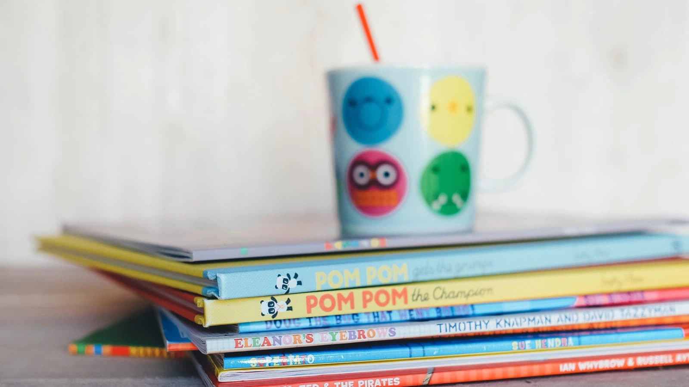
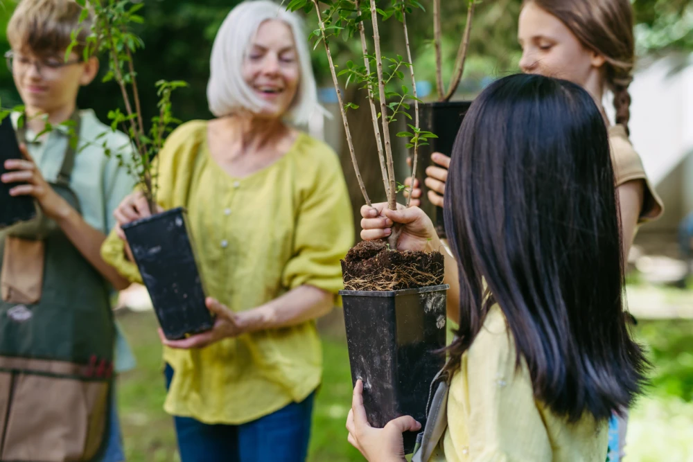

Målgruppe, tilgange og metoder
Målgruppe
Tilbuddet henvender sig til børn og unge med blandt andet:
- Børn og unge i aldersgruppen 6-18 år
- Udfordring inden for autismespektret
- Opmærksomhedsforstyrrelser som ADHD
- Udviklings- og adfærdsmæssige vanskeligheder
- Udfordringer i relationer og trivsel

Tilgange og metoder
Hos Botilbuddene Himmerland arbejder vi med en pædagogisk tilgang, der har fokus på trivsel, tryghed og udvikling i hverdagen.
Vores tilgang er inspireret af anerkendende, strukturerede og relationsbaserede perspektiver, hvor vi tilpasser indsatsen til det enkelte barn eller den unge og til rammerne for støtteophold..

Tilgange
Anerkendende tilgang
Vi møder barnet eller den unge med respekt, forståelse og nysgerrighed. Vi tager udgangspunkt i barnets perspektiv og arbejder med at styrke selvforståelse, relationer og tryghed i samspillet med andre.

Struktur og forudsigelighed
Vi arbejder med tydelige rammer og genkendelighed i hverdagen. Gennem struktur og forudsigelighed understøtter vi barnets mulighed for ro, overblik og deltagelse i fællesskaber.

Relationsarbejde i hverdagen
Vi anvender hverdagen som en pædagogisk ramme, hvor relationer, samspil og daglige aktiviteter er centrale elementer i barnets trivsel og udvikling.

Metoder
Vi henter inspiration fra forskellige pædagogiske metoder og tilgange, som anvendes i det omfang, det giver mening i det enkelte forløb.
KRAP
Vi arbejder med en ressourcefokuseret tilgang inspireret af KRAP, hvor fokus er på at styrke barnets ressourcer, mestring og positive udvikling.

Low Arousal
Vi anvender principper fra Low Arousal i vores tilgang til konflikthåndtering og trivsel. Det indebærer, at vi møder barnet med ro og afstemte reaktioner, så der skabes trygge rammer og færre konflikter i hverdagen.
Få mere information om Botilbuddene Himmerland